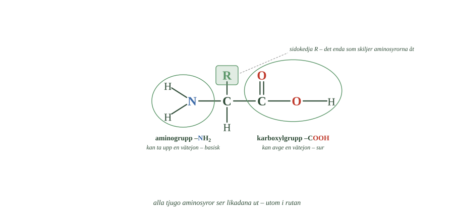
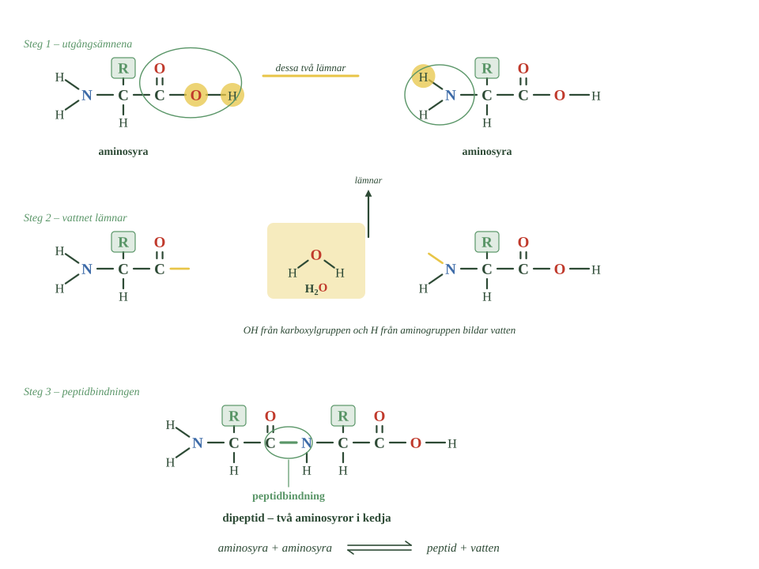
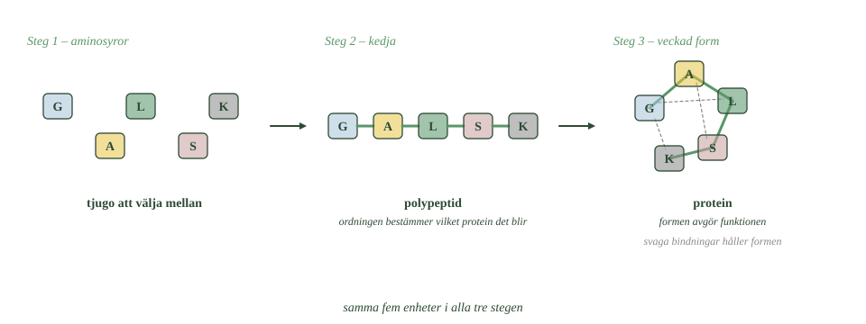
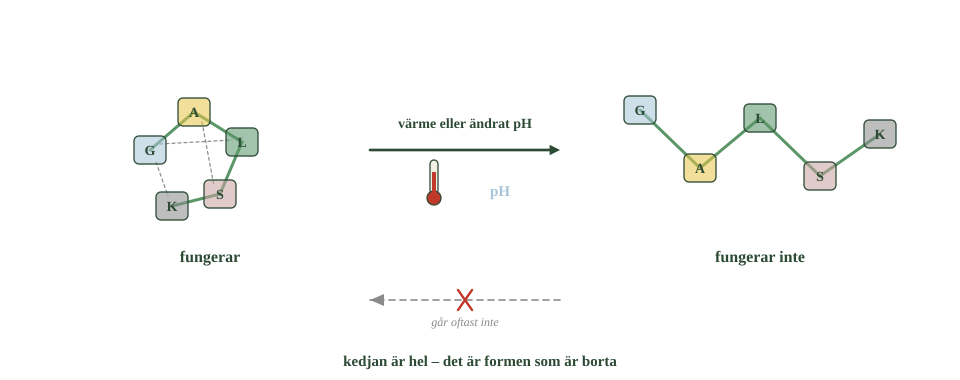

- Vilket atomslag skiljer proteiner från kolhydrater och fetter?
- Vilka två funktionella grupper finns i en aminosyra?
- Vilken av dem är sur, och vilken är basisk?
- Vad sitter bundet till kolatomen i mitten?
- Vad är det som skiljer de tjugo aminosyrorna åt?
Kolhydrater och fetter består av kol, väte och syre.
Proteiner är också organiska ämnen — men de innehåller dessutom kväve. Det gör dem kemiskt annorlunda.
De byggs varken av sockerringar eller fettsyror, utan av en helt egen sorts molekyler: aminosyror.
Vilket protein det blir avgörs av tre saker: vilka aminosyror som ingår, i vilken ordning de sitter, och hur kedjan sedan viks ihop.
Kväve är det nya atomslaget
Proteiner innehåller kol, väte och syre — precis som kolhydrater och fetter.
Men de innehåller också kväve. Och ibland svavel.
Kvävet sitter i aminosyrorna, och det är kvävet som gör proteiner till något eget.
Ett enda nytt atomslag, och en helt ny sorts kemi blir möjlig.
Två grupper i samma molekyl
En aminosyra har två funktionella grupper samtidigt. Det är ovanligt, och det är hela poängen med den.
- Räkna bindningarna från kolatomen i mitten.
- Vilken grupp är sur, och vilken är basisk?
- Vad står det i rutan, och varför står det just det?

Den ena är en karboxylgrupp, –COOH. Samma syragrupp som i organiska syror. Den kan avge en vätejon — alltså fungerar den surt.
Den andra är en aminogrupp, –\(\ce{NH2}\). Det är här kvävet sitter. Den kan ta upp en vätejon — alltså fungerar den basiskt.
En aminosyra har alltså både en syra och en bas i samma molekyl.
Därför kan de kopplas ihop
Tänk på vad det betyder.
Den ena änden vill lämna ifrån sig något. Den andra änden vill ta emot något.
Möter två aminosyror varandra passar de alltså ihop — den enas syragrupp mot den andras basgrupp.
Det är precis därför aminosyror kan bilda långa kedjor. Och det är därför proteiner alls kan finnas.
Basfunktion och sidokedja
Alla aminosyror har samma grundstruktur.
I mitten sitter en kolatom. Från den går fyra bindningar:
- en till karboxylgruppen
- en till aminogruppen
- en till en väteatom
- en till en sidokedja
Sidokedjan brukar markeras med bokstaven R. Den är det enda som skiljer aminosyrorna åt.
Vissa sidokedjor är små, andra stora. Några dras till vatten, andra undviker det. Några är elektriskt laddade.
I levande organismer används tjugo olika aminosyror. Samma grundmodell tjugo gånger — bara rutan är olika.
- Vilket atomslag skiljer proteiner från kolhydrater och fetter?
- Vilka två funktionella grupper finns i en aminosyra?
- Vilken av dem är sur, och vilken är basisk?
- Vad sitter bundet till kolatomen i mitten?
- Vad är det som skiljer de tjugo aminosyrorna åt?
Kolhydrater och fetter består av kol, väte och syre.
Proteiner är också organiska ämnen, men de innehåller dessutom kväve. Det gör dem kemiskt speciella.
De byggs varken av sockerringar eller fettsyror, utan av en helt annan sorts molekyler: aminosyror.
Vilket protein det blir avgörs av vilka aminosyror som ingår, i vilken ordning de sitter, och hur kedjan sedan viks.
Kväve är det nya atomslaget
Proteiner innehåller kol, väte och syre — och dessutom kväve. Ibland också svavel.
Kvävet sitter i aminosyrorna, och det är kvävet som skiljer proteiner från kolhydrater och fetter.
Ett enda nytt atomslag, och en helt ny sorts kemi blir möjlig.
Karboxylgrupp i ena änden, aminogrupp i den andra
En aminosyra innehåller två funktionella grupper samtidigt.
Den ena är en karboxylgrupp, –COOH — samma syragrupp som i organiska syror. Den kan avge en vätejon och fungerar därför surt.
Den andra är en aminogrupp, –\(\ce{NH2}\). Den kan ta upp en vätejon och fungerar därför basiskt.
En aminosyra har alltså både en syragrupp och en basgrupp i samma molekyl.
Det är just därför de kan kopplas ihop till kedjor.
Basfunktion och sidokedja
Alla aminosyror har samma grundstruktur. I mitten sitter en kolatom bunden till fyra saker: en karboxylgrupp, en aminogrupp, en väteatom — och en sidokedja.
Sidokedjan är det enda som skiljer aminosyrorna åt. Den brukar markeras med bokstaven R.
Vissa sidokedjor är små, andra stora. Några dras till vatten, andra undviker det. Några är laddade.
I levande organismer används tjugo olika aminosyror. Samma grundmodell, tjugo olika sidokedjor.
Aminosyran är både syra och bas — mot sig själv
Standardtexten säger att aminosyran har en syragrupp och en basgrupp i samma molekyl. Det stämmer, och det förklarar varför de kan kopplas ihop.
Men det väcker en fråga texten inte ställer: vad händer om de två grupperna reagerar med varandra?
Det gör de. Nästan hela tiden.
Karboxylgruppen avger sin vätejon. Aminogruppen tar emot en. Och eftersom de sitter på samma molekyl går vätejonen oftast bara den korta vägen mellan dem.
Resultatet är en molekyl som är positiv i ena änden och negativ i den andra — men neutral som helhet. En sådan molekyl kallas zwitterjon, av tyskans ord för tvekönad.
Det förklarar något märkligt med aminosyror. De är fasta ämnen med höga smältpunkter, ofta över 200 grader. Andra organiska molekyler av samma storlek är vätskor.
Skälet är att laddade molekyler dras till varandra mycket starkare än oladdade. En kristall av aminosyror hålls ihop nästan som ett salt.
Formen beror också på pH. I sur lösning tar aminogruppen upp en extra vätejon och hela molekylen blir positiv. I basisk lösning avger karboxylgruppen sin, och molekylen blir negativ.
Vid ett bestämt pH — olika för varje aminosyra — är den exakt neutral.
Om modellen. "En syragrupp och en basgrupp" är rätt, men det antyder att de sitter stilla och väntar på andra molekyler. De reagerar i själva verket med varandra först. Och det är därför aminosyror beter sig som salter snarare än som de organiska molekyler de är.
- Vilka grupper binder till varandra när två aminosyror kopplas ihop?
- Vad kallas bindningen som bildas?
- Vilka två tidigare reaktioner liknar denna?
- Vad avgör vilket protein en kedja blir?
- Vad är det som styr hur kedjan viks?
Syragruppen möter aminogruppen
När två aminosyror reagerar binds den enas karboxylgrupp till den andras aminogrupp.
Samtidigt lämnar en OH-grupp från karboxylgruppen och ett H från aminogruppen.
- Vilken grupp lämnar OH, och vilken lämnar H?
- Vilken färg har kväveatomen?
- Jämför med bilderna av esterbildningen och av sockerringarna. Vad är likadant?

Vad blir OH plus H? Vatten, igen.
Kvar blir en ny bindning, och den kallas peptidbindning.
Tredje gången samma sak
Stanna upp här.
Det här är tredje gången du ser samma reaktion i boken.
Ester: alkohol plus syra, vatten lämnar. Disackarid: två sockerringar, vatten lämnar. Protein: två aminosyror, vatten lämnar.
Tre helt olika ämnesgrupper. Samma sorts reaktion.
Den heter kondensationsreaktion, och den är ett av naturens vanligaste sätt att bygga stora molekyler av små.
Kedjorna blir långa
Många aminosyror med peptidbindningar emellan bildar en polypeptid.
Ett protein består av en eller flera sådana kedjor.
Storleken varierar enormt. Ett litet protein har omkring femtio aminosyror. Det största i människokroppen har nästan tjugosjutusen.
Men antalet är inte det viktigaste. Det avgörande är ordningen.
Byt plats på två aminosyror och du har ett annat protein.
Kedjan viks ihop
En rak kedja gör ingen nytta alls.
För att proteinet ska fungera måste kedjan vikas till en bestämd tredimensionell form.
- Räkna enheterna i varje steg. Är de lika många?
- Följ kedjan med fingret i sista bilden. Går den att följa hela vägen?
- Vad är det de streckade linjerna visar?

Det är sidokedjorna som styr veckningen. Några dras till vatten och söker sig utåt, mot omgivningen. Andra undviker vatten och gömmer sig inuti. Några bildar vätebindningar med varandra. Några stöter bort varandra för att de har samma laddning.
Alla dessa krafter drar och trycker samtidigt — och kedjan hamnar i en bestämd form.
Formen avgör allt
Och nu kommer poängen.
Formen avgör funktionen.
Det är därför ett enzym bara passar vissa ämnen. Det är därför ett protein kan bära syre medan ett annat bygger hår.
Formen är inte en detalj. Det är hela grejen.
- Vilka grupper binder till varandra när två aminosyror kopplas ihop?
- Vad kallas bindningen som bildas?
- Vilka två tidigare reaktioner liknar denna?
- Vad avgör vilket protein en kedja blir?
- Vad är det som styr hur kedjan viks?
Syragruppen möter aminogruppen
När två aminosyror reagerar binds den enas karboxylgrupp till den andras aminogrupp.
Samtidigt lämnar en OH-grupp från karboxylgruppen och ett H från aminogruppen. Tillsammans bildar de vatten.
Kvar blir en ny bindning, som kallas peptidbindning.
Det här är tredje gången du ser samma sorts reaktion. Ester, disackarid och nu protein — två molekyler kopplas ihop och en vattenmolekyl lämnar.
Reaktionstypen heter kondensationsreaktion.
Kedjorna blir långa
Många aminosyror med peptidbindningar emellan bildar en polypeptid. Ett protein består av en eller flera sådana kedjor.
Storleken varierar enormt. Ett litet protein har omkring femtio aminosyror. Det största som finns i människokroppen har nästan tjugosjutusen.
Men antalet är inte det viktiga. Det avgörande är ordningen.
Samma aminosyror i en annan ordning ger ett helt annat protein.
Kedjan viks ihop till en bestämd form
En rak kedja gör ingen nytta. För att proteinet ska fungera måste kedjan vikas till en bestämd tredimensionell form.
Det är sidokedjorna som styr veckningen. Några dras till vatten och söker sig utåt. Andra undviker vatten och hamnar inuti. Några bildar vätebindningar, andra stöter bort varandra.
Alla krafterna tillsammans gör att kedjan viks på ett bestämt sätt.
Och formen avgör funktionen. Det är därför ett enzym bara passar vissa ämnen, och därför ett protein kan vara byggmaterial medan ett annat transporterar syre.
Formen är inte en detalj. Den är hela poängen.
Kedjan viker sig själv — nästan alltid
Standardtexten säger att sidokedjorna styr veckningen och att formen avgör funktionen. Båda delarna stämmer. Men det som är verkligt märkligt är att det fungerar.
Tänk på problemets storlek. En kedja med hundra aminosyror kan i princip vika sig på ett astronomiskt antal sätt. Skulle proteinet pröva sig fram slumpmässigt, en form i taget, skulle det ta längre tid än universums ålder att hitta rätt.
Ändå viker sig ett protein på någon tiondels sekund.
Förklaringen är att det inte prövar sig fram. Veckningen sker i steg. Små delar av kedjan hittar snabbt sin lokala form, dessa delar hittar varandra, och strukturen faller på plats ungefär som en tratt — varje steg begränsar vad som kan hända härnäst.
Det betyder också något viktigt: all information om formen finns i ordningen mellan aminosyrorna. Ingenting annat behövs. Kokar man ett protein försiktigt och låter det svalna kan det ibland hitta tillbaka helt av sig självt.
I en cell går det ändå inte alltid rätt. Det är trångt, och en halvvikt kedja kan fastna i en grannmolekyl innan den hunnit bli färdig. Därför finns särskilda proteiner som kallas chaperoner — de håller nyfödda kedjor avskilda tills veckningen är klar.
Och när det ändå går fel kan följderna bli allvarliga. Vissa sjukdomar beror på proteiner som vikits på ett felaktigt sätt och sedan klumpar ihop sig.
Om modellen. Standardnivån säger att kedjan viks till en bestämd form. Det låter som något som bara händer. I själva verket är det ett av biologins svåraste problem — och att naturen löser det på en tiondels sekund, varje gång, är förklaringen till att liv över huvud taget fungerar.
- Vad händer med peptidkedjan vid denaturering?
- Vad är det som går förlorat?
- Varför räcker värme eller ändrat pH?
- Hur använder kroppen denaturering med flit?
- Varför kan ett stekt ägg inte bli rått igen?
Denaturering är att formen går sönder
När ett protein tappar sin veckade form kallas det denaturering.
Lägg noga märke till vad som inte händer.
Kedjan går inte sönder. Peptidbindningarna sitter kvar. Alla aminosyror är på plats i rätt ordning.
Det är formen som kollapsar.
Och det räcker. Ett enzym som tappat sin form passar inte längre till de ämnen det skulle arbeta med. Det är lika värdelöst som om det vore sönderklippt.
Värme och pH räcker
Varför går formen sönder så lätt?
Därför att veckningen hålls på plats av svaga bindningar, bland annat vätebindningar. De är mycket svagare än peptidbindningarna i själva kedjan.
Därför räcker det med värme eller ändrat pH.
Ägget i stekpannan
När du steker ett ägg denaturerar proteinerna i äggvitan.
De veckade molekylerna öppnar sig, och de delar som förut var gömda inuti hamnar utåt. Där möter de andra proteiner, och de fastnar i varandra.
Resultatet ser du: äggvitan går från genomskinlig och rinnig till vit och fast.
Kroppen använder det också
Även sur miljö denaturerar proteiner.
I magsäcken gör saltsyran just det med proteinerna i maten. De veckar upp sig, och då kommer enzymerna åt att bryta kedjan.
Det är alltså inte bara en olycka när proteiner denaturerar. Din kropp gör det med flit.
Ofta går det inte att ångra
Ett stekt ägg kan inte bli rått igen.
Men tänk på vad det betyder. Kedjan är inte avklippt — den finns kvar, hel.
- Räkna enheterna i båda bilderna. Är de lika många?
- Vad finns i den vänstra bilden som saknas i den högra?
- Varför är pilen tillbaka överkryssad?

Det som är borta är den exakta veckning som behövdes.
Molekylen hittar helt enkelt inte tillbaka.
- Vad händer med peptidkedjan vid denaturering?
- Vad är det som går förlorat?
- Varför räcker värme eller ändrat pH?
- Hur använder kroppen denaturering med flit?
- Varför kan ett stekt ägg inte bli rått igen?
Denaturering är att formen går sönder
När ett protein förlorar sin veckade form kallas det denaturering.
Lägg märke till vad som inte händer: kedjan av aminosyror går inte sönder. Peptidbindningarna sitter kvar. Det är den tredimensionella formen som kollapsar.
Det räcker för att proteinet ska sluta fungera. Ett enzym som tappat sin form passar inte längre till de ämnen det skulle arbeta med.
Värme och pH räcker
Veckningen hålls på plats av svaga bindningar, bland annat vätebindningar.
Därför räcker det med värme eller ändrat pH för att störa den.
När ett ägg steks denaturerar proteinerna i äggvitan. De förändras och bildar nya kontakter med varandra, och äggvitan går från genomskinlig och rinnig till vit och fast.
Även sur miljö fungerar. I magsäcken denaturerar saltsyran proteinerna i maten, vilket gör dem lättare för enzymerna att bryta ner.
Det är alltså inte bara en olycka när proteiner denaturerar. Kroppen använder det.
Ofta går det inte att ångra
I de flesta vardagliga fall går denaturering inte att återställa.
Ett stekt ägg kan inte bli rått igen.
Men lägg märke till vad det betyder. Kedjan är inte avklippt — den finns till stor del kvar. Det som är borta är den exakta veckning som behövdes.
Molekylen hittar helt enkelt inte tillbaka.
Ibland går det faktiskt att ångra
Standardtexten säger att denaturering oftast inte går att återställa, och ger ägget som exempel. Det stämmer för ägg. Men det stämmer inte alltid, och undantaget är upplysande.
År 1961 gjorde den amerikanske forskaren Christian Anfinsen ett försök. Han tog ett enzym, bröt alla bindningar som höll veckningen, och lät kedjan veckla ut sig helt.
Enzymet slutade fungera, precis som väntat.
Sedan tog han försiktigt bort de ämnen som orsakat denatureringen.
Och enzymet vek sig tillbaka av sig självt — till exakt samma form, med full funktion.
Det visade något avgörande: hela informationen om formen ligger i aminosyrornas ordning. Inget annat krävs. Anfinsen fick nobelpriset för det 1972.
Varför går det då inte med ett ägg?
Därför att ägget innehåller enormt många proteinmolekyler tätt ihop. När de vecklar ut sig fastnar de i varandra innan de hinner vika sig tillbaka. Det som bildas är ett nätverk av sammanklumpade kedjor, och där finns ingen väg tillbaka.
Skillnaden är alltså inte kemisk utan praktisk. En ensam molekyl kan hitta hem. En miljard molekyler i en klump kan det inte.
Om modellen. "Denaturering går inte att ångra" är en bra tumregel för matlagning. Men det är inte en egenskap hos denatureringen — det är en följd av trängsel. Molekylen har fortfarande all information som behövs. Den hinner bara inte använda den.
Laddar övningskort…
Laddar frågor ...